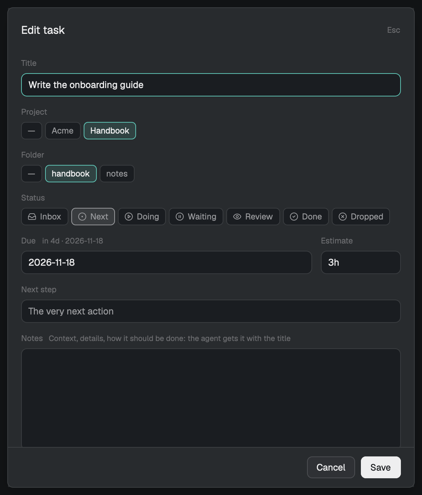
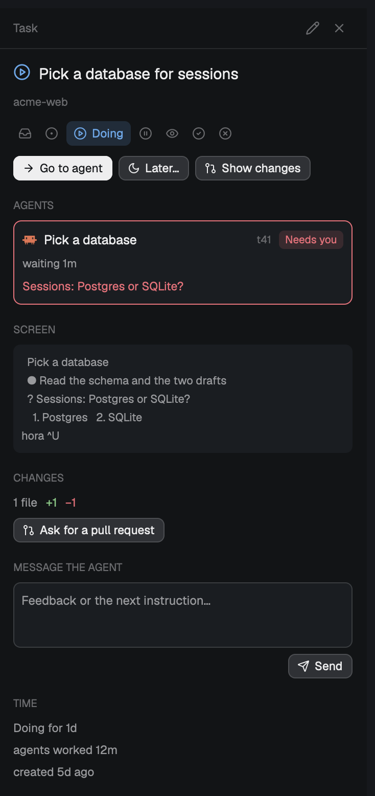
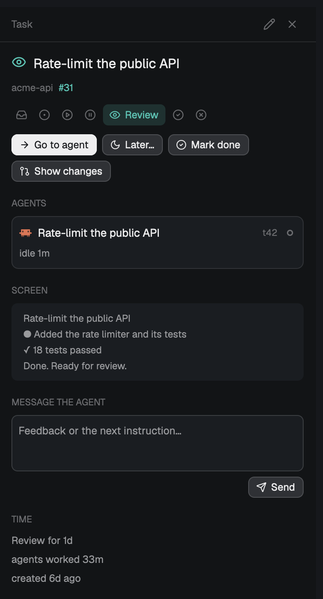
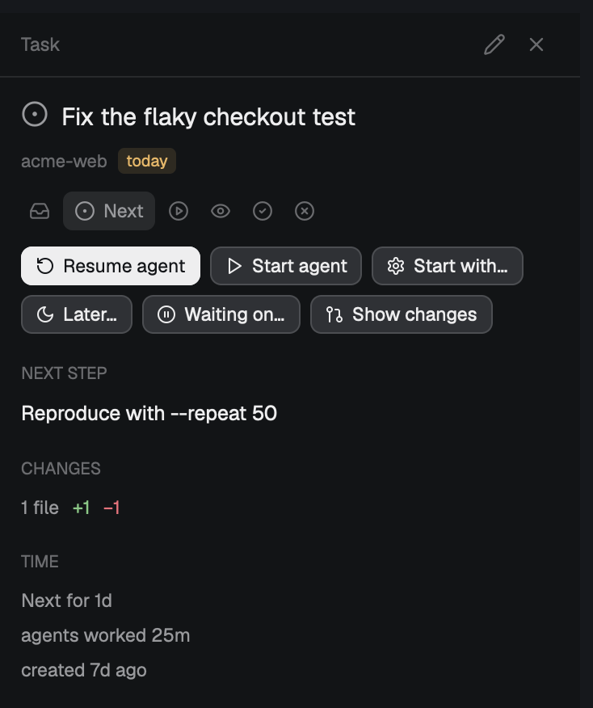
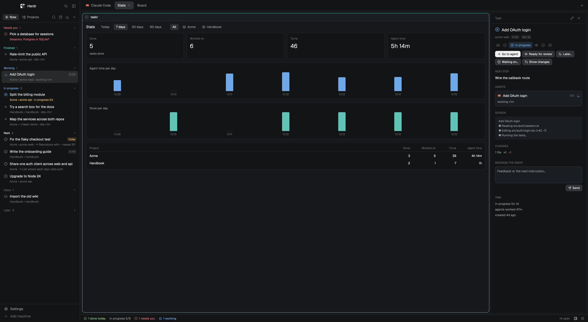
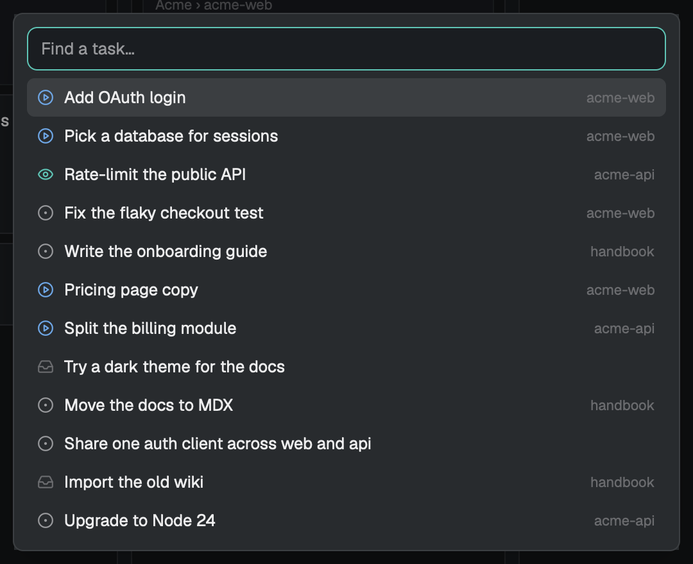
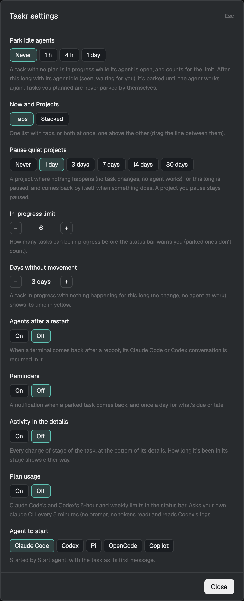
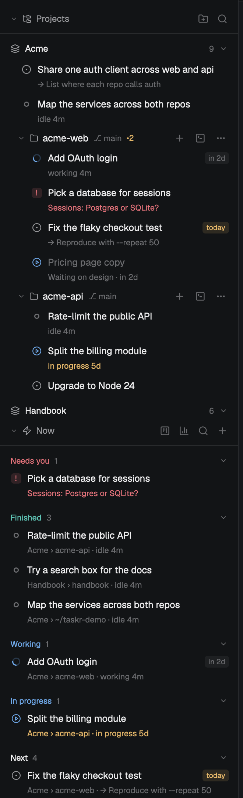

From install to a finished task
Ten short steps. You'll set up a project, start an agent on a task, answer its question, review what it did, mark it done, and pick work up again after a restart.
Install
You need the Herdr app 0.1.13 or later, and git. gh, GitHub's command line, is optional: it adds issues, pull requests and CI checks.
git clone https://github.com/alex-roc/herdr-taskr
cd herdr-taskr
./install.sh --keysThe script copies the layout, its theme and the mod into ~/.config/herdr-app, and --keys adds taskr's shortcuts without replacing any you already have. Run it again to update; ./install.sh --uninstall removes taskr and keeps your tasks.
Prefer to let an agent do it? In a Herdr terminal, ask your agent to "add the layout at github.com/alex-roc/herdr-taskr". Herdr's agents know how to install shared layouts.
Switch to taskr
Open Herdr's Settings → Look and pick taskr, or from any terminal:
herdr-app do layout.switch '{"name":"taskr"}'Your spaces, tabs and agents are the same; taskr only changes how they're shown. The left sidebar becomes the task list, a detail panel on the right shows the task you pick when you want more (open it with the panel button in the status bar or cmd i; it stays open or closed as you leave it), and the status bar counts what's done today, what's in progress and what needs you. Switch back to Herdr's own layout the same way.
Make a project

Press tab in the list (or click Projects) to see the outline. Every folder open in Herdr shows up, under No project at first.
Click the folder button in the header to make a project: give it a name and add its folders with Add folder…: a repository, or a plain folder with no repositories inside, goes in at once; a folder that holds several (~/dev) lists them to tick, with a filter, or you can Add <folder> itself. A folder in a project is only a pointer: no terminal, no task, until you start something there; right-click it to move it to another project or remove it from this one. A project's own ›_, + and ⋯ open a terminal, a task or an agent for the whole project: they open in the project's own space, in the folder holding all its folders (~/dev; your home folder while it has none, or when they share nothing below it), and show at the project's level, above its folders; the agent reaches every folder and is told which they are. ⋯ → Close project closes the project's space and every space of its folders (a folder's menu closes just its own). You can also drag a folder (like ~) onto a project's name to move it there, with its tasks. Drag a project's row onto another to change their order.
Many projects? Pause the ones you're not on now (right-click → Pause project): they wait folded under Paused at the end, and their tasks leave Now and the board of every project, unless an agent there needs you or is working; what you parked stays in Later. Make active brings one back.
Each git folder shows its branch, ↑2 for commits not pushed and •3 for uncommitted changes. Hover them for the words. A folder that isn't a repository shows none of them.
Add tasks
Press n, click + in the header, or + on a folder to start with that folder filled in.

Keep the title short. The next step is the one action to take now; what the work needs (context, details, how it should be done, links) goes in Notes. When you start an agent on the task, it gets the title, the next step and the notes as its first message.
Write the due date the way you'd say it:
today, tomorrow | as you'd expect |
fri, friday | the next Friday, never today |
+3d, 2w | three days, two weeks from today |
12-24 | this year's, or next year's if it passed |
2026-12-24 | exactly that day |
The date it understood appears beside the label as you type. Use Next step for the very next action: it's shown under the task in the list, and the agent gets it too.
Already have a backlog? Right-click the folder → Import GitHub issues or Import Linear issues, tick the ones you want, and they land in the Inbox with the issue attached. From Linear, the issues assigned to you come most urgent first, with their due date.
What goes first
Next is in the order you set: drag a task onto another and it takes that place, with a line showing where it lands. The Inbox waits in Projects and on the board: move an idea to Next and it's in Now. t (or Move to the top in its menu) puts a task first; new tasks go last. The same order holds in Projects and on the board.
Linear needs a personal API key (Linear → Settings → Security & access → Personal API keys). Export it as LINEAR_API_KEY in your shell profile, or save it alone in ~/.config/herdr-app/data/taskr/linear-key. taskr only reads from Linear.
Start an agent
Select a task and press l, hover it and click ▶, or click Start agent in the detail. taskr opens your agent in a new tab in the folder's space, with the task as its first message: the title, the next step, your notes and the issue if there is one.
The tab is tied to the task, and the task moves to In progress as soon as the agent starts working. Its row says where it is and how long the agent has been at it; the terminal's header, what the agent is running:
Acme › api · working 14m
Add login · opus 5.5 · high · ctx 182k ~/dev/apiThat's the task, the model, the reasoning effort and how much context it holds. taskr reads these from Claude Code's and Codex's own logs; other agents show their state and time.
In its own worktree
Want another agent, model or effort? Start with…, beside Start agent in the detail, picks them, and the task keeps them for its next starts. Press w (or choose In a worktree there) to keep the work apart from your checkout: taskr creates the branch task/<name> in ~/.herdr/worktrees/<repo>/<name> first and starts the agent there. Herdr's own worktree tools see it too.
Rather work with terminals? Start an agent anywhere: it's a task already, with no plan, named after what the agent calls its work and moving with it like any other. Press Plan it… in its detail to add a next step, notes or a due date, or touch it (a note, Later, a drag to another place) and it's yours. Leave it, and it stays in In progress while its agent is open, counted for your limit (with many agents open, park the idle ones with Later → Until its agent works, or let Park idle agents in the settings do it); it goes to Done when its agent quits or its tab closes (a tab left open is a plain terminal again, and an agent started in it picks the task back up), and Resume agent picks it up (after a restart, its agent comes back by itself). A plain terminal (shell) isn't a task: Add to task… in its menu ties it to one, and Move to task… on a task moves its agent into another.
Answer when it asks

When an agent stops to ask something, its task jumps to Needs you at the top of Now, with the question in red right in the row. The status bar counts it too.
Select it to read the question and the last lines of the agent's screen in the detail. Then either:
- press enter (or Go to agent) to answer in its terminal, or
- type in Message the agent and press Send, without leaving the list.
Herdr itself plays a sound and posts a notification; taskr doesn't add another.
Review and finish

When the agent stops, its turn is over, not the task: it shows under Finished, in bold until you look, then with its agent Idle, waiting for your next word (its stage stays In progress). Give it the next instruction, or, when the whole task is ready, press Ready for review: it moves to Review. It's done when you mark it, or when you quit its agent and only a terminal is left: a terminal alone isn't a task (Resume agent brings it back). (Working with pull requests? A PR opened for a task in its own worktree moves it to Review too.)
Not now? Move it to Next (you'll do it: it leaves Finished for Next, your list of what's pending, until its agent finishes another turn) or Dropped (you won't), or park it: Later (right-click or z) for tomorrow, next week, a day you type, someday or until its agent works; Waiting on… when it depends on someone, with who and a day to follow up. It waits in a folded Later section, out of your in-progress count, and comes back on its day with a notification.
In the detail, under Changes:
- Show changes opens Herdr's diff panel for the task's folder.
- For a task with its own branch (started in a worktree) and
gh, the pull request and its CI checks appear. Ask for a pull request sends the agent a request to commit, push and open one; Send failed checks sends it the names of the checks that failed.
Happy with it? Press space or Mark done. To put its tabs away too, right-click → Archive, which can also remove its worktree. A branch with unmerged commits is always kept.
Pick up after a restart

While a Claude Code or Codex agent works on a task, taskr remembers which conversation it's in. If the agent is gone (you restarted the machine, or closed its tab), the task's detail shows Resume agent first.
It runs claude --resume <id> or codex resume <id> in the folder the agent was in, and ties the new tab to the task. The agent keeps its whole conversation, so it doesn't need a first message. In the list, r does the same.
Plan on the board
Press cmd shift b or the board button at the top of the lists (Projects' header when they're stacked) to open the board of every project as a tab.

- Drag a card to another column to change its status, or onto another card to put it at that place; click it to open its detail.
- Every project has its own board, in a tab of its own with only its tasks and agents. The pills at the top (All, then each project) go from one board to another; in Projects, a project's board button (shown while the pointer is on its row) opens it too.
- Agents started from a terminal are on the board already, as tasks with no plan.
See what got done
The chart button at the top of the lists (beside the board's) opens Stats as a tab; a project's menu opens it for that project.

- Pick the period (today, or the last 7, 30 or 90 days) and every project or one.
- Done counts the tasks you marked done (a session that ended because its agent quit isn't one); Worked on, the tasks whose agents worked, planned or not; Turns, how many times an agent finished its turn; Agent time, how long they worked.
- Done tasks count back through their history. Agent time and turns are kept per day from 1.7 on, so a longer period says from which day it counts.
Keys and settings
Clicking a task in the list shows it in the detail and brings its agent's tab (or its terminal) to the front.
With the keyboard in the list (cmd j):
| j k | move down and up |
| enter | go to the task's agent |
| space | mark done (again: back to Next) |
| t | move the task to the top |
| n e | new task, edit task |
| l w | start an agent, start it in a worktree |
| r | resume the task's last agent conversation |
| i | open the task's detail |
| z | later: park it until a day, someday, or until its agent works |
| / | find a task |
| tab | switch between Now and Projects |
Anywhere in the layout: cmd k finds a task, cmd shift n makes one, cmd i shows or hides the detail.

The gear at the right of the status bar opens the settings, in groups:
- Now and lists: Now and Projects as one list with tabs, or stacked, both at once, one above the other (drag the line between them; tab moves between them). Park idle agents: a task whose agent stays idle this long (from an hour to a week; never by default) is parked until the agent works again, planned or not.
- Status bar: what it shows (done today, turns today, working, open tasks; what needs you always shows), and Claude Code's and Codex's plan limits, off until you turn them on (it starts your
claudeCLI for a moment every few minutes). - Notifications and details: reminders (when a parked task comes back, and once a day for what's due or late), and every change of stage at the bottom of a task's detail, off by default.
- Agents: after a restart, Herdr brings every terminal back as a shell and taskr types the agent's resume into each one that had a Claude Code or Codex conversation, one at a time; and which of your installed agents Start agent runs.


Stacked, the sidebar shows Projects above and Now below, as Herdr's own sidebar shows spaces and agents. Drag the line between them to give either more room, fold one to its header with the chevron by its name, or double-click a name to give that list all the room; tab moves the keys from one to the other, and the layout's shortcuts go to Now.
That's the whole loop. Next, the examples show workflows built on it.